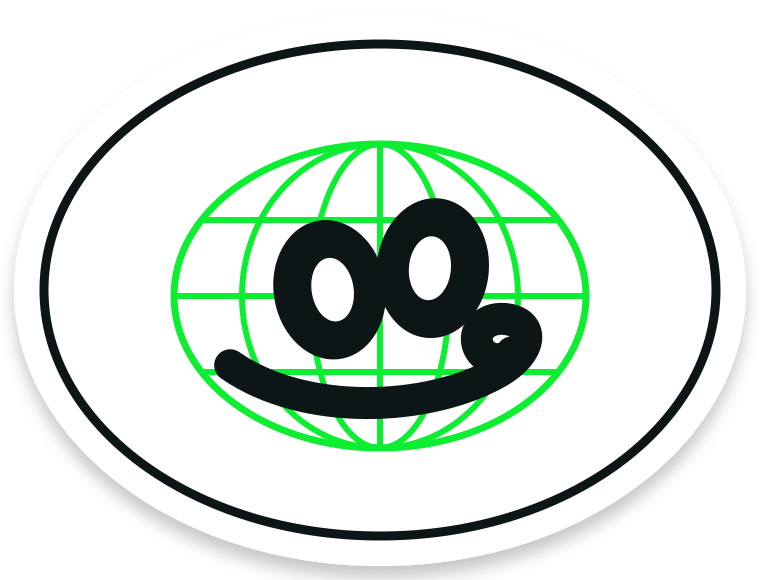

TITANIC THE 1996 CYBERFLIX ADVENTURE · ON APPLE SILICON
An adventure out of time, not lost to time.
The original bits, full screen on a modern Mac. Bring your own discs.
THE PREMISE / 01
Our team loved this game. We wanted to play it again.
WHAT IT DOES / 02
No remaster, no port, no old PC in the closet. The original game, running right, on the Mac already on your desk.
-
01
Wine plays the Windows original.
The 1996 Windows release runs in Wine’s stable 640×480 virtual desktop on Apple Silicon — real bits, not a remaster.
-
02
A native scaler makes it big.
The Titanic Scaler mirrors that tiny window into a full-screen 4:3 macOS viewer and forwards every click and arrow key — no blink, no blur.
-
03
Discs and saves just behave.
Both discs stay mounted as virtual CD-ROMs — ⌘2 swaps mid-voyage — and a persistent S: drive keeps your saves, with one-click backups.
-
04
You can prevent World War II.
Yes, seriously. Recover the right artifacts before the iceberg and the twentieth century takes a kinder path. That was always the plot.
THE RABBIT HOLE / 03
Why are people obsessed?
WHAT’S REAL NOW / 04
The runtime is on GitHub.
Compatibility scripts, the Titanic Scaler source, health checks, disc tools, and save backups — MIT licensed and running today. The game itself isn’t included: bring your own two discs.
THE POINT / 05
The ship sinks. The game shouldn’t.
GET THE RUNTIME
A LITTLE LAB FOR IDEAS WE CAN’T LEAVE ALONE.